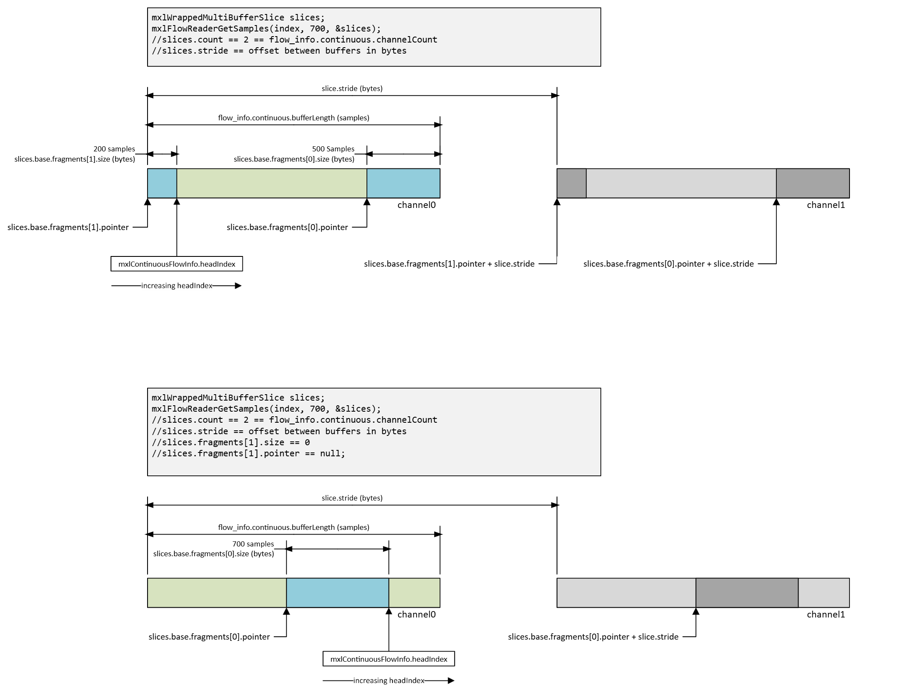

Continuous Ring Buffer I/O¶
Continuous ringbuffers are used in the MXL SDK for handling audio data, where samples are written and read in a continuous, streaming fashion. This section describes the structure, memory layout, and access patterns for continuous ringbuffers in MXL.
mxlContinuousFlowConfigInfo in Context¶
The MXL SDK provides APIs such as mxlFlowReaderGetInfo, mxlFlowReaderGetConfigInfo, mxlFlowWriterGetInfo, and mxlFlowWriterGetConfigInfo to retrieve configuration and runtime information about flows. For continuous flows, the configuration includes:
| Field | Type | Meaning |
|---|---|---|
channelCount |
uint32_t |
Number of de-interleaved channel ring buffers allocated. |
bufferLength |
uint32_t |
Number of sample slots in each channel buffer. |
reserved |
uint8_t[56] |
Zeroed padding for structure alignment. |
The common block preceding the continuous block provides additional information:
- grainRate: Sample rate (numerator/denominator rational).
- format: Payload format (e.g., audio/float32).
- maxCommitBatchSizeHint / maxSyncBatchSizeHint: Hints for batch sizes.
- payloadLocation and deviceIndex: Indicate if samples are in host RAM or device memory.
Example usage:
mxlFlowInfo info = {};
MXL_THROW_IF_FAILED(mxlFlowReaderGetInfo(reader, &info));
const mxlContinuousFlowConfigInfo *continuous = &info.config.continuous;
const uint32_t channelCount = continuous->channelCount;
const uint32_t channelBufferLength = continuous->bufferLength;
const mxlRational sampleRate = info.config.common.grainRate;
// sampleRate == samples per second for continuous flows
Memory Layout of Continuous Flow Info¶
The flow metadata file ${mxlDomain}/${flowId}.mxl-flow/data contains a single mxlFlowInfo object with the following organization:
Offset Size Description
0x0000 0x04 version (currently 1)
0x0004 0x04 size (must stay 2048)
0x0008 0x80 mxlCommonFlowConfigInfo (ID, format, rate, batch hints, payload info)
0x0088 0x40 mxlContinuousFlowConfigInfo (channelCount, bufferLength, reserved)
0x00C8 0x40 mxlFlowRuntimeInfo (headIndex, lastWriteTime, lastReadTime, reserved)
0x0108 0x6F8 reserved padding to keep the struct cache-line aligned
The actual audio samples are stored in ${mxlDomain}/${flowId}.mxl-flow/channels, a shared memory blob of size channelCount * bufferLength * sampleWordSize bytes. The layout is:
- channel 0 buffer (bufferLength * sampleWordSize bytes)
- channel 1 buffer (bufferLength * sampleWordSize bytes)
- ...
- channel N-1 buffer
Each channel buffer is a classic circular buffer. The API exposes this geometry through mxlWrappedMultiBufferSlice, which provides two fragments (base.fragments[0] and base.fragments[1]) to handle wrap-around, and a stride for channel separation.
Accessing Samples¶
To read a window of samples:
- Specify the absolute sample index (
index) for the last sample. - Specify the number of samples to look backwards by (
count), not exceedingbufferLength / 2. - Specify a timeout (
timeoutNs).
mxlFlowReaderGetSamples and mxlFlowReaderGetSamplesNonBlocking fill an mxlWrappedMultiBufferSlice pointing into the channel buffer blob.
Example pseudocode for reading audio/float32 samples:
// Read the latest 256 samples per channel, waiting up to 5 ms.
mxlWrappedMultiBufferSlice slices;
mxlFlowRuntimeInfo runtime;
mxlFlowReaderGetRuntimeInfo(reader, &runtime);
const uint64_t lastSample = runtime.headIndex;
const size_t windowLength = 256;
mxlFlowReaderGetSamples(
reader,
lastSample,
windowLength,
5'000'000, // 5 milliseconds
&slices);
const size_t channels = slices.count;
const size_t strideBytes = slices.stride;
const size_t fragment0Samples = slices.base.fragments[0].size / sizeof(float);
const size_t fragment1Samples = slices.base.fragments[1].size / sizeof(float);
for (size_t channel = 0; channel < channels; ++channel) {
const uint8_t *channelBase0 = static_cast<const uint8_t *>(slices.base.fragments[0].pointer) + channel * strideBytes;
const uint8_t *channelBase1 = static_cast<const uint8_t *>(slices.base.fragments[1].pointer) + channel * strideBytes;
const float *firstSlice = reinterpret_cast<const float *>(channelBase0);
const float *secondSlice = reinterpret_cast<const float *>(channelBase1);
// Process the first fragment (may already contain the entire window).
for (size_t i = 0; i < fragment0Samples; ++i) {
consume_sample(channel, firstSlice[i]);
}
// Only needed when the window wrapped around the ring buffer.
for (size_t i = 0; i < fragment1Samples; ++i) {
consume_sample(channel, secondSlice[i]);
}
}
Writing samples uses mxlMutableWrappedMultiBufferSlice in a similar pattern.
Important Rules¶
- Readers can only observe up to
bufferLength / 2samples in one call; the other half is "write in progress." indexis inclusive:(headIndex, 256)returns samplesheadIndex - 255throughheadIndex.- Always treat the window as two contiguous slices.
- Continuous flows use the same slice/fragment helpers as discrete flows.
